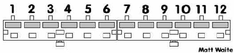

Power Supply AT
Power Supply AT :
Power supply yang memiliki kabel power yang dihubungkan ke motherboard terpisah menjadi dua konektor power (P8 dan P9). ciri dari Power Supply jenis ini adalah saat mematikan komputer, tidak cukup hanya dengan menjalankan system shutdown, namun kita harus menekan tombol power setelah system shutdown berjalan. Power supply ini digunakan sampai pada era komputer Pentium 2.
Penjelasan Konektor:

Keterangan:
| 1. Orange | 3. Yellow | 5. Black | 7. Black | 9. White | 11. Red |
| 2. Red | 4. Blue | 6. Black | 8. Black | 10. Red | 12. Red |
Konektor Output PSU AT :